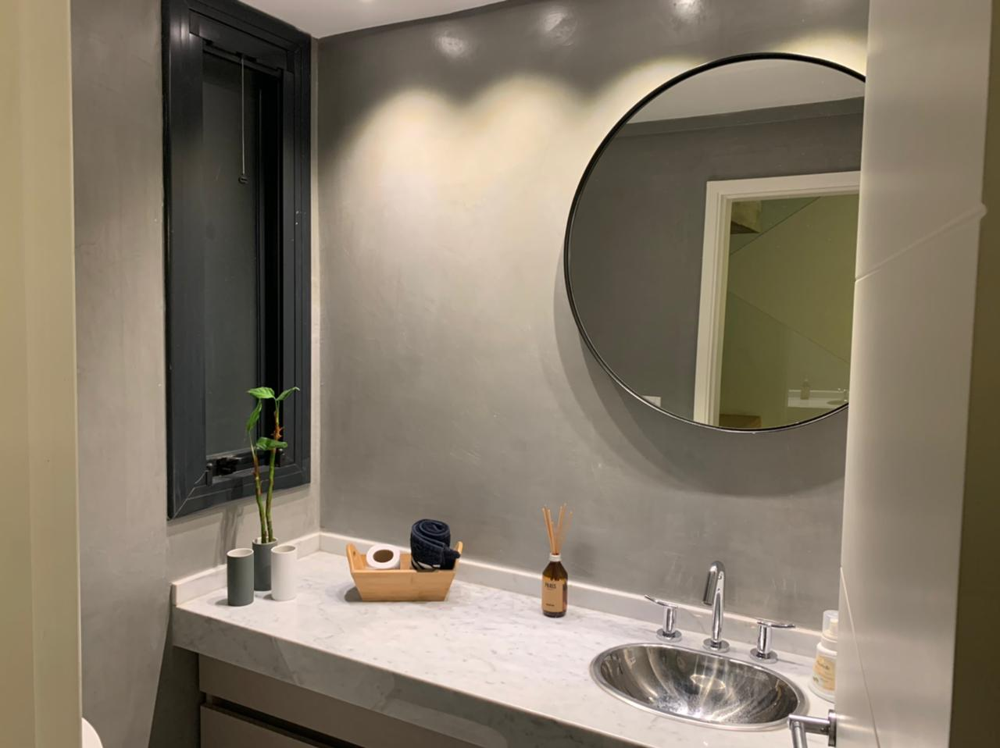
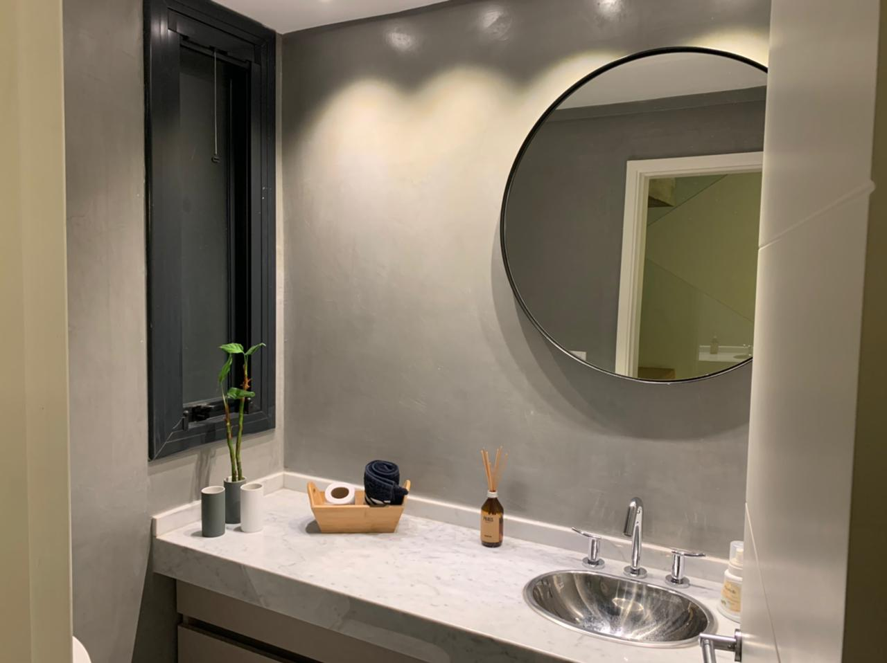

María Pérez
Ana Martínez es una talentosa diseñadora de interiores con más de diez años de experiencia en la industria. Graduada en Diseño de Interiores por la Universidad de Barcelona, Ana ha trabajado en numerosos proyectos residenciales y comerciales, destacándose por su capacidad para crear espacios elegantes y funcionales. Su pasión por los detalles y su amor por la estética la llevaron a fundar su propio negocio de espejos, donde combina su conocimiento del diseño con una meticulosa selección de materiales de alta calidad. Bajo su dirección, la empresa ha crecido significativamente, ofreciendo piezas únicas que no solo embellecen, sino que también transforman cualquier ambiente.

Alejandro García
Alejandro García es un ingeniero mecánico con un enfoque en la innovación y la calidad de los productos. Con un título de la Universidad Politécnica de Madrid y una vasta experiencia en la industria manufacturera, Alejandro aporta un enfoque técnico y preciso al negocio de espejos. Su conocimiento en materiales y procesos de fabricación ha sido crucial para garantizar que cada espejo producido cumpla con los más altos estándares de durabilidad y diseño. Alejandro se dedica a la optimización constante de los procesos productivos, asegurando que la empresa no solo ofrezca productos de calidad superior, sino que también mantenga un compromiso con la sostenibilidad y la eficiencia.
 
